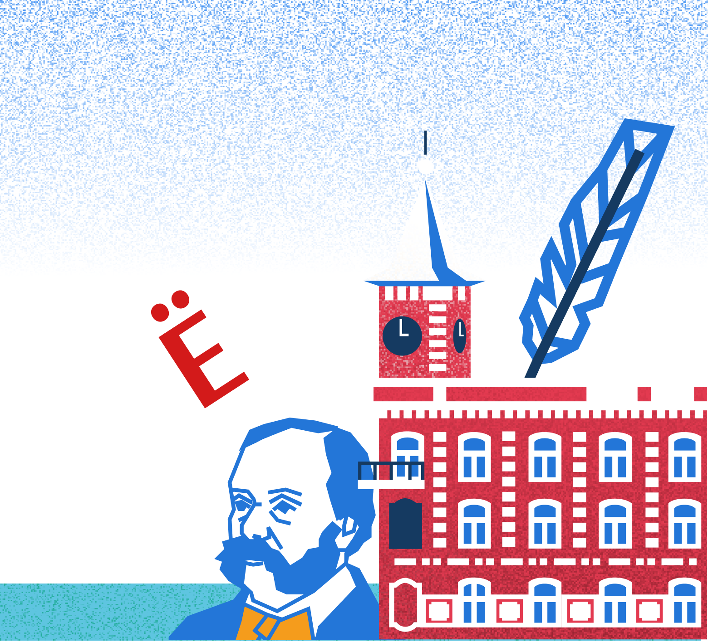
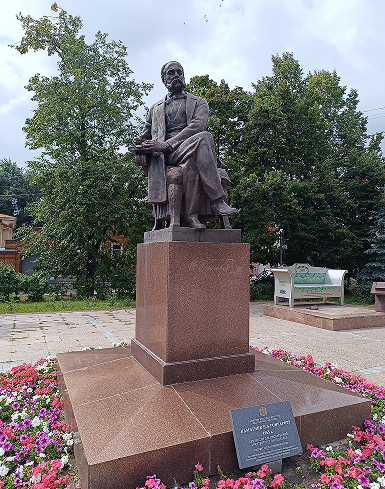
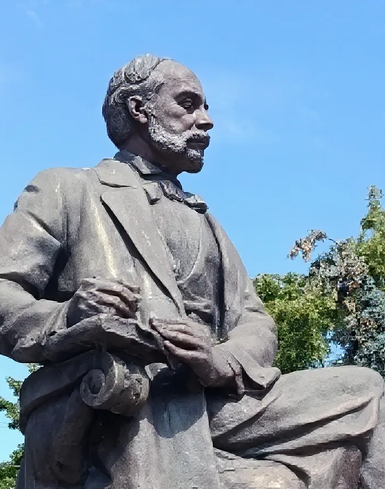
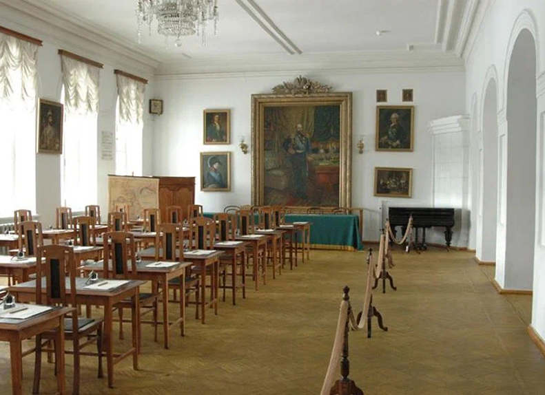
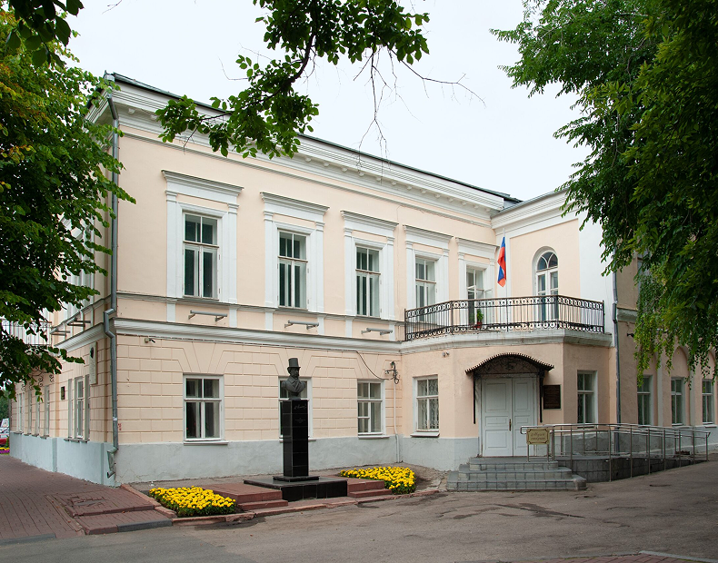
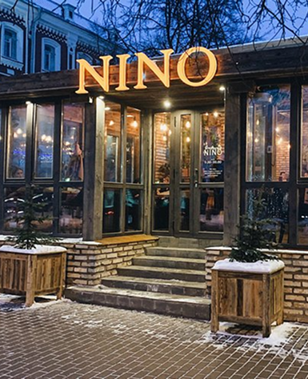
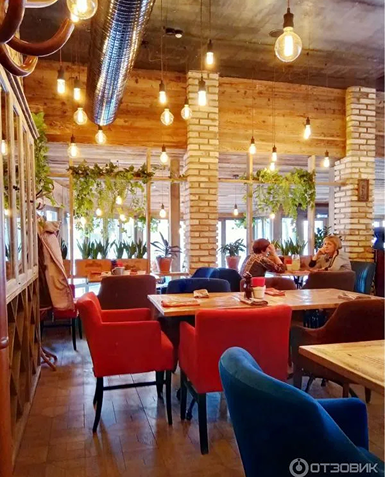
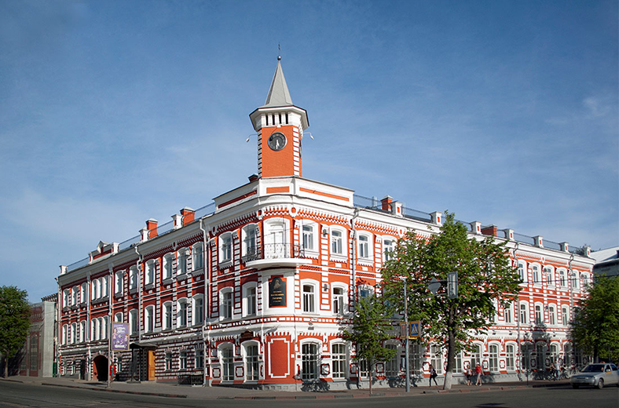
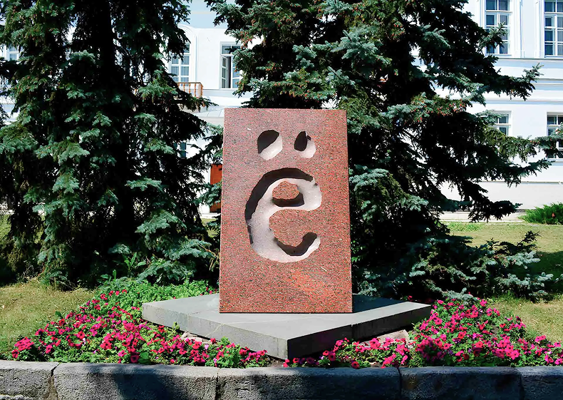

Литературная прогулка
по улице Гончарова: от Гончарова до буквы «Ё»
Площадь Ленина, памятник И.А. Гончарову
Сквер у памятника букве «Ё»
Пешеходный маршрут-рекомендация по историческому центру Ульяновска. Он объединяет ключевые литературные и исторические объекты города, расположенные вдоль пешеходной улицы Гончарова — бывшей Стрелецкой, главной артерии купеческого Симбирска. Прогулка позволит за полдня погрузиться в атмосферу XIX века, узнать о великих писателях-земляках и завершиться у символа, который знает вся страна.

1. Памятник И.А. Гончарову
Адрес: Площадь Ленина, памятник И.А. Гончарову


Начинаем прогулку с главной площади города. Здесь стоит бронзовый памятник Ивану Гончарову — писателю, который прославил Симбирск в романе «Обломов». Памятник установили в 1965 году, автор — скульптор Лев Писаревский. Гончаров сидит в кресле и смотрит в сторону Волги, как бы обдумывая сюжет следующей книги.
Рядом — здание драмтеатра, построенное как раз к 100-летию писателя. Отсюда открывается вид на начало пешеходной улицы Гончарова, по которой нам предстоит идти.
2. Музей «Симбирская классическая гимназия»
Адрес: ул. Спасская, 18 (угол с ул. Гончарова). Часы работы: 10:00–18:00 (выходной — понедельник)
Первая музейная точка маршрута — здание бывшей мужской гимназии, где с 1879 по 1887 год учился Володя Ульянов, будущий Ленин. Музей открыли в 1990 году, и с тех здесь всё сохранилось, как в XIX веке: классы с деревянными партами, физический кабинет с ретро-приборами, актовый зал с портретами императоров.

3. Литературный музей «Дом Языковых»
Адрес: ул. Спасская, 22. Часы работы: 10:00–18:00 (выходной — понедельник)

Следующая остановка — дом дворян Языковых, где в XIX веке собирался литературный салон. Сюда приходили поэт Николай Языков, историк Николай Карамзин, декабрист Иван Пущин. Сейчас здесь музей, посвящённый литературной жизни Симбирска.
В экспозиции — прижизненные издания книг, рукописи, портреты писателей, мебель той эпохи. Особое внимание — Николаю Карамзину, который родился в Симбирской губернии и позже ввёл в русский язык букву «Ё».
4. Обед: Ресторан «Nino»
Адрес: ул. Гончарова, 18. Режим работы: 09:00–00:00, без выходных

После двух музеев логично сделать паузу и пообедать поблизости от улицы Гончарова, 22. Неподалёку находится ресторан «Nino» на улице Гончарова, 18 — это современное место с тёплой атмосферой и акцентом на гостеприимстве.
В основе меню — грузинская и кавказская кухня: хинкали, хачапури, шашлык, ароматные супы и сытные горячие блюда. Здесь хорошо заказывать несколько позиций «на стол» и делиться: хачапури по-аджарски, ассорти шашлыка, салаты со свежей зеленью.

5. Музей И.А. Гончарова
Адрес: ул. Гончарова, 20. Режим работы: 10:00–18:00, понедельник — выходной

Главная точка маршрута — дом, где родился и вырос Иван Гончаров. Музей открыли в 1982 году к 170-летию писателя. Здесь восстановлены интерьеры комнат, где жила семья Гончаровых: гостиная, кабинет, столовая.
В экспозиции — личные вещи писателя: письменный стол, чернильница, очки, первые издания «Обломова» и «Фрегата „Паллада"». Во дворе музея стоит тот самый «Диван Обломова» — бронзовая инсталляция, на которой может посидеть каждый.
6. Памятник букве «Ё»
Адрес: пересечение ул. Гончарова и ул. Льва Толстого
Завершаем прогулку у одного из самых необычных памятников Ульяновска — букве «Ё». Его установили в 2005 году в честь Николая Карамзина, который первым использовал эту букву в печати.
Памятник представляет собой гранитную стелу высотой 2,1 метра, на которой высечена заглавная «Ё». Стоит он на месте, где раньше был Гостиный двор — центр торговой жизни Симбирска. Отсюда рукой подать до набережной Волги, где можно закончить день, глядя на закат над рекой.
